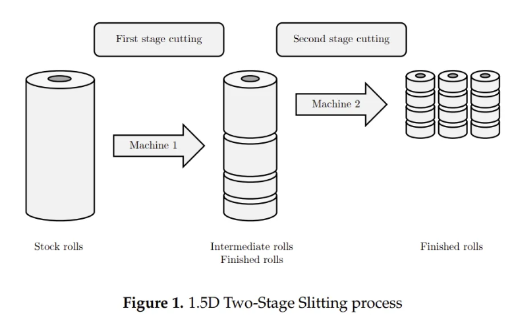
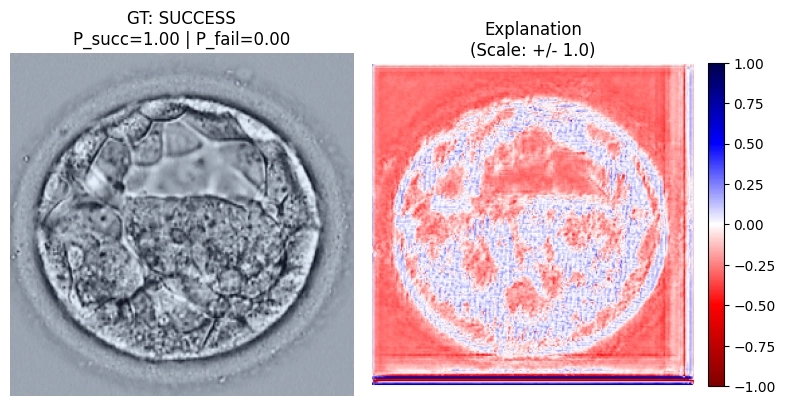
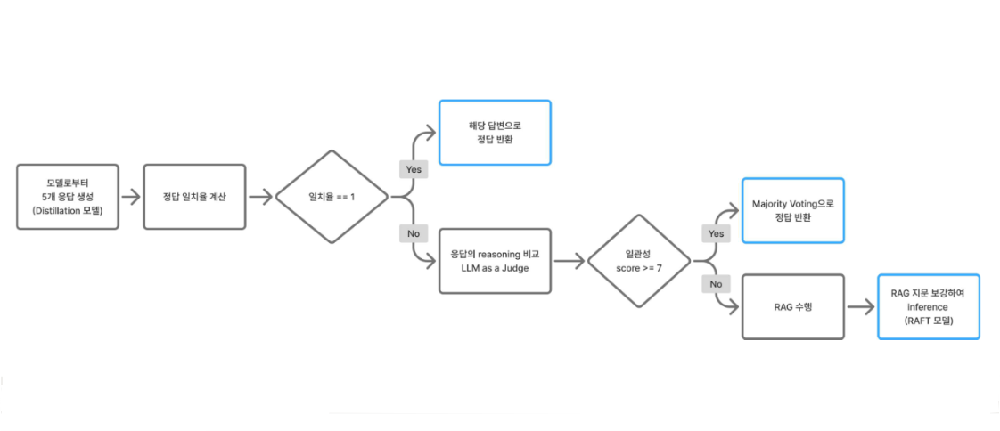

|
모호한 문제를 구체적으로 정의하고 해결해나가는 과정에 큰 성취감을 느낍니다.
저의 궁극적인 목표는 왜 이런 결정을 내렸는지 신뢰할 수 있는, 해석 가능한 AI 를 개발하는 것입니다.
이를 위해 학부연구생으로서 In-model XAI 연구를 수행하고 있으며, 학회 운영진 활동을 통해 다수의 논문 리뷰를 경험하고 기초 역량을 다졌습니다.
저의 강점은 끝까지 최선을 다하는 성실함, 그리고 깔끔한 문서화입니다.
|
Featured Projects
|

|
ML Engineer Internship @ Tilda
- 2-Stage Genetic Algorithm을 도입하여 기존 Solver 대비 원자재 Loss 18% 절감·과생산율 2.72%p 감소 및 연산 속도 52% 단축
- 오픈소스 H-TSP의 이론적 오류를 발견하여 GitHub Issue 제기 및 코드 수정 2건 기여
- 실무 및 논문 데이터 기반의 합성 데이터 생성 로직 구현으로 데이터 부족 문제 해결
|
|

|
학부연구생 @ AI빅데이터융합경영학과 (지도교수: 박종혁)
- Image Matting 기반의 망막 혈관 미세 경계 추출 (연구 방향 전환)
- 배반포 이미지를 활용한 임신 초기 예측 및 In-model XAI 연구
- U-Net 기반 Explainer를 활용해 Positive/Negative explanation map을 분리 생성하고, 이를 Classifier의 multi-scale feature에 직접 주입하는 구조를 구현해 AUROC 0.7125 달성
|
|

|
수능형 문제 풀이 모델 개발
- 4B reasoning 모델의 성능 극대화를 위해 Test-time Scaling 및 Selective RAFT 기법을 적용하여 베이스라인 대비 Macro F1 Score를 약 11.2% 향상 (0.60 → 0.67)
- RAG 적용 시 발생하는 문제인 불필요한 컨텍스트의 영향을 최소화하기 위해 RAFT 기법 적용으로 Macro F1 0.13% 향상
- 30B teacher 오답 샘플 기반 Prompt Engineering으로 distillation 이전 teacher 정답률을 오답 31문항 기준 약 45% 개선, 4B용 고품질 CoT 데이터 확보
|

|
설명 가능한 기업 신용 위험 모니터링 AI Agent KB-Crack
- 제 7회 KB Future Finance A.I. Challenge 우수상
- 46개 이상의 재무·비재무 지표, 실시간 뉴스까지 통합 분석하는 설명 가능한 신용 모니터링 에이전트 구축
- Retrieval 최적화를 위해 MMR 알고리즘을 적용하여 정보 중복 방지
- LangGraph 기반 하이브리드 필터링 프로세스 설계로 노이즈 뉴스 배제 및 실질적 신용 위험 징후 탐지 정밀도 강화
|
Honors and Awards
- KB Future Finance A.I. Challenge 우수상, KB 국민은행 (2025.09)
- CJ SW 창의캠프 Best Supporter 상, CJ 올리브네트웍스 (2023.12)
- 제11회 NTIS 정보활용 경진대회 최우수상, KISTI (2023.10)
- Global Peers 9기 우수팀, 국민대학교 (2023.06)
Scholarships
- 해성장학금 (전액 장학금), 해성문화재단 (2025.03)
- 성적 우수 장학금 (성적 1종 포함 총 5회 수혜), 국민대학교 (2022 - 2024)
- 대학 우수 및 특별 장학금 (총 4회 수혜), 국민대학교 (2022 - 2024)
Certifications
- SQLD, 한국데이터산업진흥원 (2024.04.05)
- ADsP, 한국데이터산업진흥원 (2023.09.15)
|
Activities
- 학부연구생, 국민대학교 (2024.10 ~ )
- AI빅데이터융합경영학과, 국민대학교 (2022.03 ~ )
- Naver Boostcamp AI Tech 8기, 네이버 커넥트재단 (2025.09 ~ 2026.02)
- ML Engineer Intern, Tilda (2025.03 ~ 2025.06)
- 6기 운영진, 인공지능학회 X:AI (2025.03 ~ 2025.12)
- 11기 운영진, AI·데이터학회 D&A (2024.03 ~ 2024.12)
- 홍보대사 11기 전략기획팀장, 국민대학교 경영대학 K-Angel (2023.03 ~ 2023.12)
- 복지부원, AI융합경영학과 학생회 (2022.09 ~ 2023.12)
- CJ UNIT 9기, CJ SW 창의캠프 (2023.09 ~ 2023.12)
- Global Peers 9기, 국민대학교 (2023.03 ~ 2023.07)
- 소아완화의료 프로그램 자원 봉사 나누미 16기, 서울대학교 어린이병원 꿈틀꽃씨 (2022.09 ~ 2023.02)
|
Thank you for visiting! Last updated: March 2026.
|
|